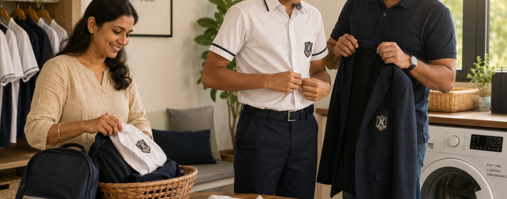

Walk into a school campus today, and something interesting becomes clear. The uniform is still there. Shirts, blazers, skirts and trousers. But the expectations around it are evolving.
The students wearing these garments belong to a generation shaped by a different environment. Gen-Z has grown up surrounded by digital technology, visual media and constant exposure to new ideas about identity and expression. The result is subtle but important: the role of the school uniform is beginning to shift.
Uniforms are no longer experienced only as a rule or requirement. For many students, they shape how the school day feels, how comfortable they are during long hours on campus, how easily they move between activities and how connected they feel to the community around them.
For educators and designers alike, this raises an important question:
What actually matters to Gen-Z when it comes to school uniforms?
Comfort Is The Baseline
The most immediate expectation from today’s students is simple: comfort.
Modern school life is dynamic. A student might start the morning in a classroom, move to a science lab before lunch, participate in a group presentation and finish the day on a sports field or at a club activity. Throughout the day, they are constantly moving between spaces and roles.
Uniforms that restrict movement or feel uncomfortable quickly become noticeable.
Gen-Z students are also accustomed to products designed around comfort, from sneakers to ergonomic devices and everyday clothing. These expectations naturally extend into the school environment.
For uniform design, this has clear implications. Breathable fabrics, softer materials and silhouettes that allow natural movement are becoming essential elements of schoolwear.
Comfort is no longer an added feature. For this generation, it is the starting point.
Identity Within Structure
School uniforms have historically been associated with equality and discipline. But equality does not mean invisibility.
Gen-Z students place a strong value on identity and belonging. They want to feel connected to the institutions they represent and proud of the communities they belong to.
When uniforms feel thoughtfully designed, balanced, modern and reflective of a school’s culture, students are more likely to see them as part of that shared identity rather than simply a rule to follow.
This does not mean turning uniforms into fashion statements. Instead, it highlights the role of thoughtful design. Small choices in proportion, fabric and detailing can signal care and intentionality.
When done well, uniforms shift from being purely regulatory to becoming a visible symbol of community.
Learning Environments Are Changing
Another factor shaping uniform expectations is the transformation of the classroom itself.
Learning today is far less static than it once was. Students move between group discussions, project-based learning, presentations and hands-on activities throughout the day.
Many traditional uniform designs were created for a different classroom model, one where students spent long hours seated at desks. The reality today is much more active.
Uniforms that support this shift through improved fits, flexible construction and durable materials help align schoolwear with how students actually learn.
In this sense, uniforms are not just garments, they are part of the physical environment that supports learning.
A Generation That Notices Design
Gen-Z is one of the most visually aware generations to date.
Growing up in a digital world means students are constantly exposed to design, aesthetics and visual storytelling across platforms and media. Even when uniforms are not meant to be fashion products, students still notice how garments look and feel.
When silhouettes feel outdated, proportions feel awkward or materials look worn quickly, students notice.
Schools that periodically revisit their uniform systems often find that small updates, cleaner lines, better fits or improved materials can make a meaningful difference in how uniforms are perceived.
The goal is not to chase trends. Instead, it is to ensure that uniforms remain relevant to the environments students inhabit.

The Practical Layer: Families
Uniform decisions also extend beyond the student experience.
For many households, schoolwear is part of a daily routine that needs to work smoothly. Parents increasingly value garments that are durable, easy to maintain and consistent across the school year.
Fabrics that resist wrinkles, retain colour and withstand repeated washing reduce everyday friction for families.
Advances in textile technology, from easy-care finishes to performance fabrics, are quietly reshaping how uniforms perform in daily life.
For schools, balancing student experience with family practicality is an important part of thoughtful uniform design.
The Broader Shift
Taken together, these changes point to a broader shift in how uniforms are understood.
Rather than being viewed only as rules to enforce, uniforms are increasingly seen as systems that shape the student experience.
When designed thoughtfully, they reduce everyday distractions and allow students to focus on learning, participation and collaboration.
At the same time, they continue to serve their original purpose: creating cohesion and reinforcing the identity of the school community.
Looking Ahead
For schools and designers, the challenge is not to abandon tradition but to evolve it thoughtfully.
Gen-Z is inviting institutions to rethink how uniforms support comfort, identity and the realities of modern learning environments. This opens new conversations around materials, fit, durability and design.
Uniforms may appear simple on the surface, but they sit at the intersection of culture, education and everyday experience.
Understanding the expectations of the students who wear them is the first step toward designing schoolwear that continues to serve its purpose, not just as clothing, but as part of the lived experience of school.